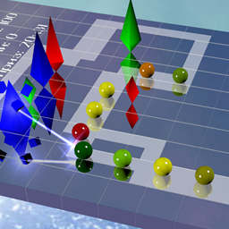
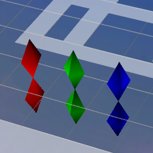
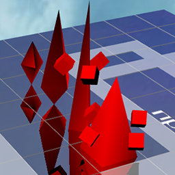
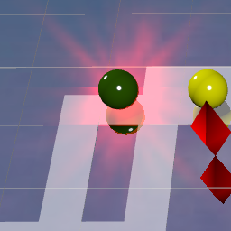
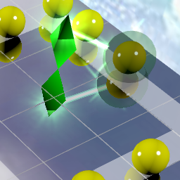
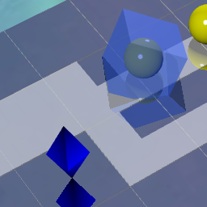

"Diamond Defense" this is a game by the rules of "Tower Defense". Your goal is to arrange the diamonds so that the balls can not reach the end of the track.

Wiki: Tower defense (TD) is a subgenre of strategy video game where the goal is to defend a player's territories or possessions by obstructing the enemy attackers, usually achieved by placing defensive structures on or along their path of attack.[1] This typically means building a variety of different structures that serve to automatically block, impede, attack or destroy enemies. Tower defense is seen as a subgenre of real-time strategy video games, due to its real-time origins,[2][3] though many modern tower defense games include aspects of turn-based strategy. Strategic choice and positioning of defensive elements is an essential strategy of the genre.

diamonds shoot at the balls and knock out the paint of their color. Balls consist of a paint of two or three colors, i.e. To destroy the entire wave, it is necessary to put at least two types of diamonds.
Balls change color depending on the number of remaining colors. After the ball is completely black (no colors), it is removed from the field.
You can improve diamonds to enhance their characteristics, you can sell diamonds of unnecessary colors to buy others.

Each type of diamond has an additional effect, which is sometimes added to a shot on the balls.
Red diamonds can "burn" ball. The burning ball is surrounded by a red light and receives a partial damage to the end of the effect:

Green diamonds can " poison " ball. During the effect of the effect, the ball gets slightly damaged and brakes all the balls following it:

The blue diamond can " freeze " ball. Frost completely stops the entire column of balls, but does not cause any damage.

Add diamonds of the right colors to each new wave of balls. Timely sell unnecessary colors and improve the existing diamonds.
If by the end of the path the balls become, for example, green - then you need to put more green diamonds.